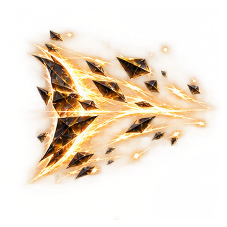
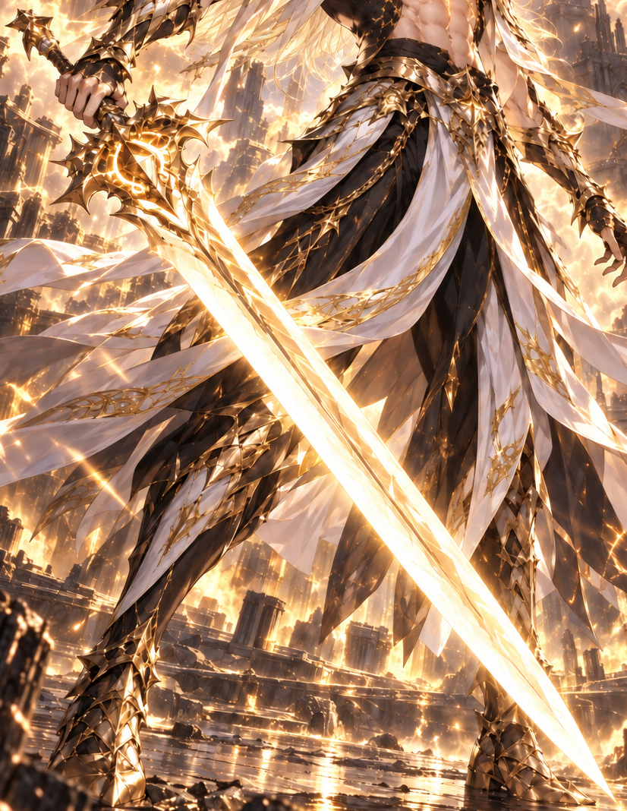
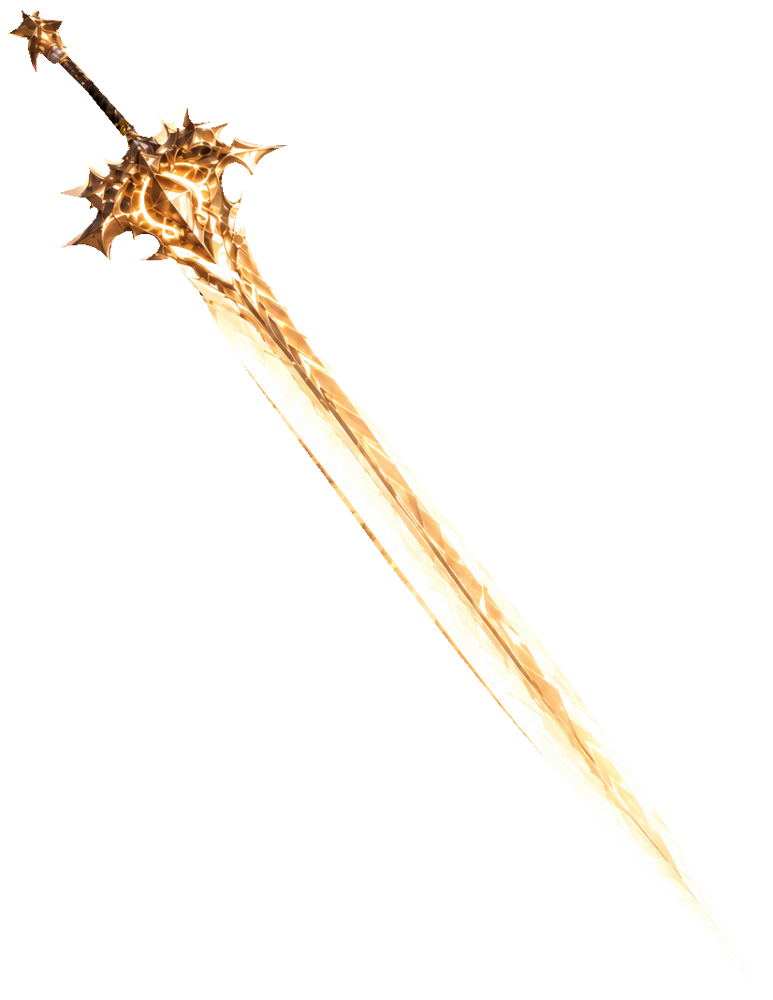
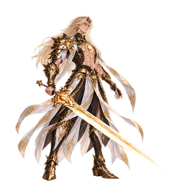
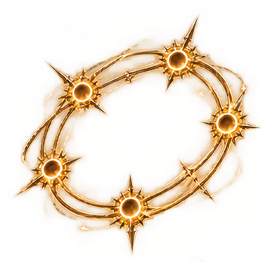
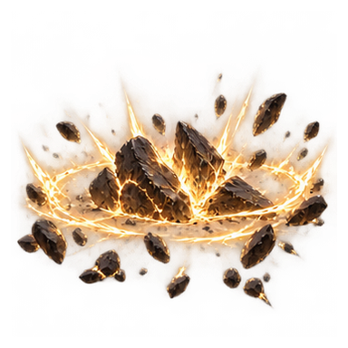

일식 사이를 가르는 잔영
검은 태양의 틈이 금빛 파편으로 풀리고, 몸의 잔영이 이동 경로를 따라 겹칩니다.

HELIOS
빛은 잔영이 되고,
검은 전장의 심판이 된다.
황금빛 태양핵, 검은 금장 갑옷과 백색 장포.
승인 원화의 장검으로 펼치는 헬리오스의 전투.
원화 · SSS 리미티드 확정 / 이름 확정 · 칭호 미지정
 APPROVED SOURCE ART
APPROVED SOURCE ARTWEAPON V2 · LIGHTING OFF
검신의 양쪽 날과 끝 장식까지 다시 분리했습니다. 손에 쥔 검·여섯 소환검·거대 검에 같은 무기를 사용합니다.



원화에서 손에 가려진 짧은 손잡이 구간만 보완했습니다. 전투 리소스는 시각 검수 중입니다.
THE SUN ANSWERS
캐릭터와 전장을 불러오는 중입니다.
검은 태양의 틈이 금빛 파편으로 풀리고, 몸의 잔영이 이동 경로를 따라 겹칩니다.

여섯 자루의 태양검이 서로 다른 방향에서 포위하고, 손의 명령에 맞춰 차례로 관통합니다.

천공의 태양문에서 거대한 검이 낙하합니다. 충격파는 전열과 후열에 시간차로 도달합니다.
